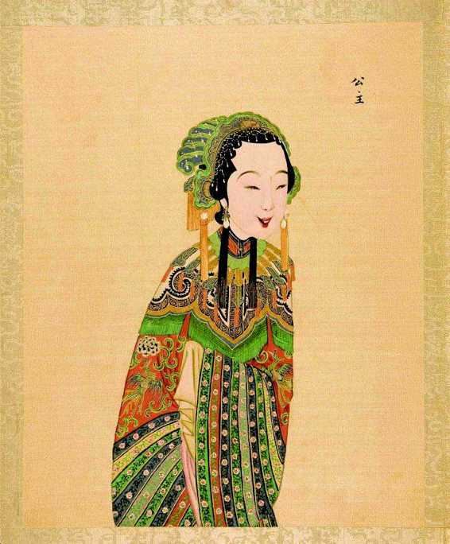
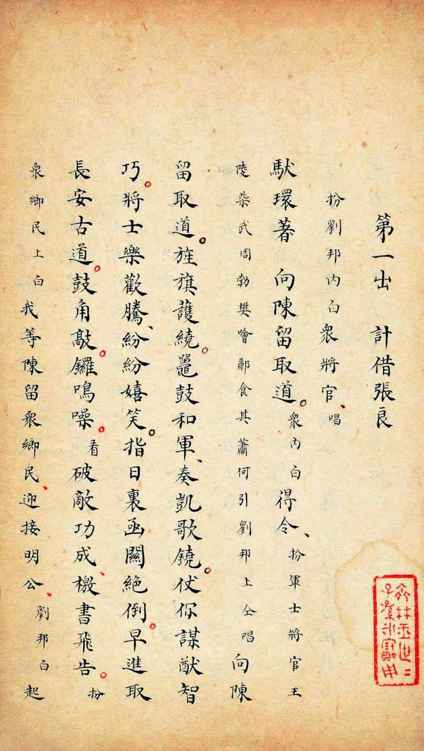
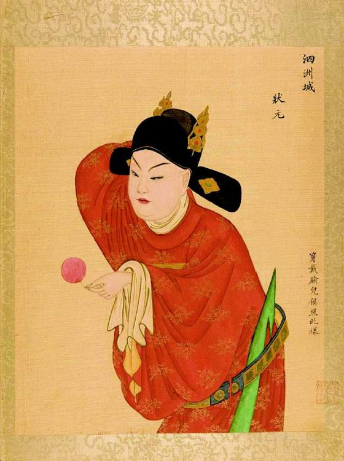
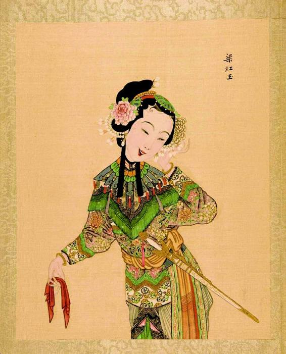
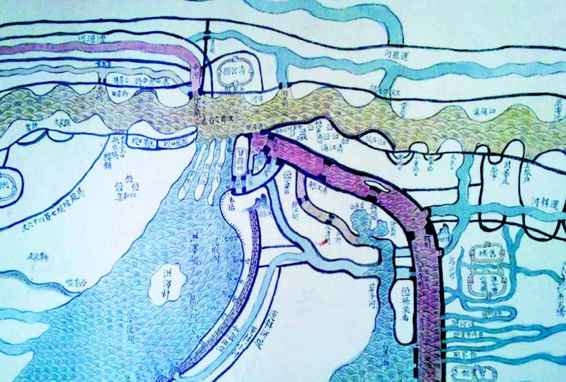

这种怀疑或不信任，在弘光末期达到顶点。当时，一起童妃案，一件太子案，都造成朱由崧到底是真是假的严重怀疑。人们猛然觉察一个很要命的问题，亦即，眼前这个据称是福王、大摇大摆坐在皇位上的人，事实上没有一个人知其底细，抑或，根本谁都不认得他。南京上上下下大小臣工，过去均未见过朱由崧。他确是依潞王来到淮安，但潞王也不能作证此人就是福王朱由崧，论起来这二人虽为叔侄，过去却也例未谋面，当初朱由崧是自行投奔卫辉潞王府，他提交了什么凭据，使朱常淓相信他便是皇侄朱由崧呢？我们并不了解。从始至终，我们只是知道有几位所谓福王府仆从一直追随左右，为他提供身份证明——万一这些人本身就是假的呢……钱秉镫曾就童妃案，写讽刺诗《假后》云：“福国昔破散，骨肉如飘蓬。诸王更衣遁，妃主不得从。……不识今上谁，空死囹圄中。”[3]又于《南渡三疑案》中说：“童氏出身不可考，而决为德昌王之故妃也。”[4]意思很清楚，疑朱由崧而不疑童妃。这在当时，是非常普遍的看法。尤其经过失败的一年，大家对于“破散”、“飘蓬”期间朱由崧的踪迹无法征信这一点，很乐于理解为这位弘光帝其实是个赝品。最离奇的说法见《甲申朝事小纪》：
马士英抚凤阳时，有以居民藏王印首者，取视则福王印也。询其人云，有博徒，持以质钱，士英因物色之。士英与王初不相识，但据王印所在，则以为真世子。[5]
依此，在南京当皇帝的那人，不过是持有福王印的某位赌徒罢了。
不过，南京的一年当中，他又回到了真实。不管前头的经历如何扑朔迷离，他做了弘光皇帝、在南京临朝一年，这可是真真切切、有目共睹。我想如果与之面对面，我将对他这样说：我也许并不知道你究系何人，但我知道你是弘光皇帝。固然，他可能是个假冒的福王，但作为弘光皇帝却并非假冒，而是经南京重臣会商决定并专门迎送，又经过正式典礼确认的。他是一个真实的皇帝。
但接下来，若问真实的弘光皇帝到底是怎样的人？我们不免又含糊起来。史述中对他有大量、压倒性的负面描写。集中在两个方面。一是与马士英、阮大铖狼狈为奸，定策前主动联络马士英为己争位，登基后对马、阮言听计从、任其操柄。一是荒淫无度，纵酒滥性，尤其是喜好幼女，甚至彻夜痛饮而淫死幼女……这些描写，有些确有其事，有些却只是想象。假如我们希望还他一个本来面目，而不只想找一个历史替罪羊，对这些描写就需要给予细致的分辨。凡属于想象的，都将其剔除于事实之外，而不论这类话语多么甚嚣尘上、众口一辞。即便确有其事的那部分，也不能就事论事，不能孤立、单线条地看，而要深入一层看前因后果，知其然也知其所以然。我们这样慎重，实在并不为着朱由崧的缘故，他个人的毁誉，说实话无关紧要，问题在于对他的看法恰当与否，很大程度上会影响我们对那段历史认识是否正确；实际上，当时一些史述所以对他的形象展开了那些刻画，本身就由于不正确历史观的指导。

升平署图样•《太平桥》之公主
中国传统戏剧服饰， 都是明代样式，无论人物出自何朝何代。故后人看戏觉得是“古装戏”，在明代当时却不妨说都是“现代戏”。这样的公主扮相，朱由崧看了大概就很亲切。

升平署剧本
升平署是清代宫庭俳乐供奉机构，前身为康熙南府。康熙和乾隆这两个喜欢南巡的皇帝，持续从南方征调剧乐，直至乾隆末年四大徽班进京。之后徽班在京逐渐形成皮黄戏，北方戏剧才后来居上。明代与升平署相类的机构，叫教坊司。朱由崧在南京，除阮大铖的阮氏家班随时听用外，秦淮旧院理论上亦属教坊司管。

升平署图样•《泗洲城》之状元
京昆演出，对人物衣着很严格，“宁穿破，不穿错”。升平署当更如此，它将具体剧目中人物形象衣样绘于图册，专门注上“穿戴脸儿俱照此样”。

升平署图样•《玉玲珑》之梁红玉
梁红玉本巾幗女杰、抗金名将，而这幅的模样却如邻家女孩，娇小俏美、甜欢可爱。这是戏剧动人之处，它总能散发出与现实所不同、抚慰人心的魔力，朱由崧对此不能自拔。

康熙年间《清淮运口图》（局部）
图中水系交聚，显示淮安作为漕运南北襟喉的要害位置。因尚在黄河夺淮期，黄河同时即淮河，居中处为“淮黄交叠处”，淮河在此逼入洪泽湖。淮安同时是大运河南北分界点，北运河终于清河县，南运河起于清江浦，皆辖淮安府，漕运总督府即设于淮安。甲申年春，“难民”朱由崧在这里听说他将被迎奉为君。